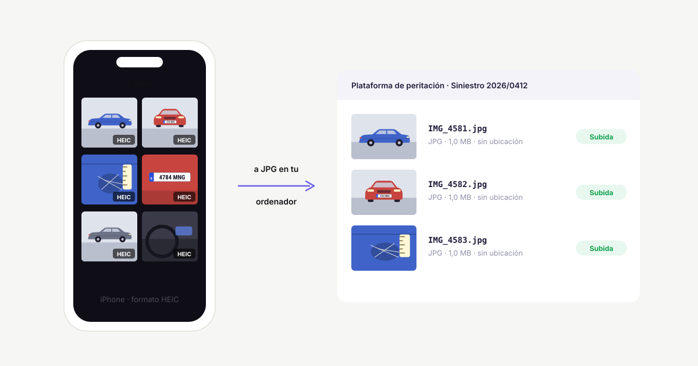

Fotos HEIC del iPhone en peritaje: qué son y cómo pasarlas a JPG
Si haces las fotos de peritaje con un iPhone, es muy probable que se guarden como HEIC y no como JPG. Es un formato que ocupa menos, pero da problemas al abrirlas en Windows y al subirlas a algunas plataformas de las aseguradoras.

Qué es el formato HEIC
HEIC es el formato que el iPhone usa por defecto desde iOS 11. Guarda la misma calidad que un JPG ocupando más o menos la mitad. El problema es que no lo entiende todo el mundo:
- Windows no siempre las abre con el visor de fotos: hacen falta las extensiones HEIF y HEVC de la Microsoft Store (la de HEVC es de pago).
- Algunas plataformas de peritación y correos de empresa no las aceptan o no las muestran.
Cómo hacer que el iPhone saque JPG desde el principio
En el iPhone: Ajustes → Cámara → Formatos → Más compatible. Desde ese momento las fotos nuevas se guardan en JPG. Las que ya tienes siguen en HEIC.
Si pasas las fotos al ordenador con el cable, también puedes ir a Ajustes → Fotos → Transferir a Mac o PC → Automático: el iPhone las convierte a JPG al copiarlas.
Cómo pasar a JPG las que ya están en HEIC
- Con PeritoLab Compresor (gratis, Windows): arrastras la carpeta y convierte las HEIC a JPG mientras las comprime. No hace falta instalar ninguna extensión de Windows ni subir las fotos a ninguna web.
- Con PeritoLab Matrículas: lee la matrícula también en las fotos HEIC y las organiza por vehículo tal como vienen del iPhone. Al organizarlas puede, además, comprimirlas y pasarlas a JPG.
Un aviso sobre las webs de conversión
Hay webs que convierten HEIC a JPG gratis, pero para eso subes las fotos a un servidor ajeno. En un peritaje esas fotos son datos de un siniestro (matrículas, a veces personas o direcciones). Es mejor convertirlas en tu propio ordenador.
Sigue leyendo
 Cómo reducir el tamaño de las fotos para enviarlas a la aseguradoraCómo reducir el tamaño de las fotos de un siniestro para la aseguradora o la plataforma de peritación sin perder detalle, y por qué quitar el GPS.
Cómo reducir el tamaño de las fotos para enviarlas a la aseguradoraCómo reducir el tamaño de las fotos de un siniestro para la aseguradora o la plataforma de peritación sin perder detalle, y por qué quitar el GPS. Qué fotos hacer en un peritaje de automóvil: la lista completaLista de las fotos de un peritaje de automóvil: identificación, generales y de detalle, cómo fotografiar los daños para que se vean y qué conservar.
Qué fotos hacer en un peritaje de automóvil: la lista completaLista de las fotos de un peritaje de automóvil: identificación, generales y de detalle, cómo fotografiar los daños para que se vean y qué conservar. Cómo organizar las fotos de un peritaje por vehículoCómo separar las fotos de un peritaje en una carpeta por vehículo: método manual, consejos para no equivocarse y cómo hacerlo automático con la matrícula.
Cómo organizar las fotos de un peritaje por vehículoCómo separar las fotos de un peritaje en una carpeta por vehículo: método manual, consejos para no equivocarse y cómo hacerlo automático con la matrícula.